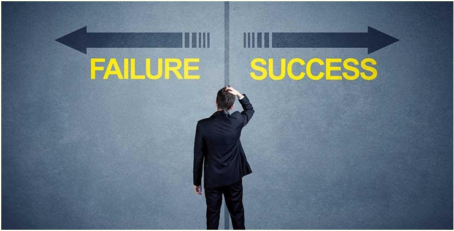

The Role of Failure in Entrepreneurship: Turning Problems into Progress
Fri Nov 1 2024
The Role of Failure in Entrepreneurship: Turning Problems into Progres
Failure is normally seen as negative, but in entrepreneurship, it is a natural path
of the journey. It's always full of risks to build a business or to be working on
any new idea, and not everything goes as expected. Actually, failure is not an
end, but a one step forward, a means to learn, grow, and become better.
You cannot get everything correct the first time you try. Mistakes are bound to
happen, plans fail, and sometimes things get tougher than you anticipated. Here,
however, lies the key truth: failure teaches you so much more than any success
ever will. It moulds you into a better decision-maker, a stronger leader, and a
more creative thinker.
Why Failure is Important
1. Teaches Lessons
Failure is one of the best teachers. It forces you to look at what went wrong and
figure out how to avoid the same mistakes next time. For example, if a business
idea fails, it might highlight a gap in market research, a poor strategy, or even
the need to improve your product. These lessons are essential for future success.
2. Builds Resilience
Facing failure makes you stronger. It’s easy to feel frustrated or defeated, but
every time you get back up and try again, you’re building resilience. This ability
to bounce back is critical for anyone starting a business, as challenges are
inevitable.
3. Encourages Creativity
When things don’t work out, you’re forced to find new ways to solve problems.
Failure pushes you to think outside the box, come up with fresh ideas, and find
innovative solutions. Many of the best ideas come from moments when things
didn’t go as planned.
4. Brings Focus
Sometimes failure happens because you’re chasing the wrong goals or trying to
do too much at once. A setback can make you pause and revaluate your
priorities. It helps you narrow your focus and concentrate on what truly matters,
making your efforts more effective.
5. Builds Character
Failure humbles you and helps you grow. It teaches patience, determination, and
perseverance. These qualities are not only important for entrepreneurship but
also for life in general.
How to Handle Failure
1. Accept It
The first step is to accept that failure happens. It’s okay to feel disappointed, but
don’t let it consume you. Instead of avoiding the problem or blaming others,
take responsibility and move forward.
2. Learn from It
Look back at what went wrong and analyse the reasons behind it. Was the plan
flawed? Was the execution poor? Or were there factors beyond your control?
By understanding the cause, you can make better decisions in the future.
3. Stay Persistent
Failure isn’t the end. It’s just a part of the process. Many successful
entrepreneurs failed multiple times before finding success. What sets them apart
is their determination to keep going, no matter how difficult it gets.
4. Seek Help
Sometimes, you might feel stuck after a failure. Talking to mentors, friends, or
colleagues can give you a fresh perspective. They might point out things you
missed or suggest solutions you hadn’t considered.
5. Celebrate Small Wins
Even in tough times, find reasons to celebrate your progress. Small wins can
boost your confidence and keep you motivated. They remind you that every step
forward, no matter how small, is a sign of growth.
Examples of Success through Failure
Entrepreneurs of all time have failed and then emerged stronger. Some notable
examples include:
Thomas Edison, while inventing the lightbulb, said he didn't fail, but rather he
just found 10,000 ways that didn't work.
Colonel Sanders, founder of KFC, was rejected over 1,000 times before his
recipe was accepted.
Walt Disney was fired from his first job due to the reason that he "lacked
imagination."
These stories also provoke the fact that failure can be considered only in the
beginning of something better.
Conclusion
Failure should not be feared, but rather welcomed. It teaches valuable lessons,
builds resilience, and encourages creativity. Every setback can be a great
opportunity to learn and grow, making you stronger and better prepared for the
future.
Entrepreneurship is not about avoiding failure but about using it as a tool for
progress. The most successful people didn't achieve their goals by never
failing—they succeeded because they learned from their mistakes and kept
going.
So, next time you have an experience with failure, take one minute to reflect on
what would have happened if you had done things differently. Remember, every
failure brought us one step closer to success. Push forward.
-By Anant Srivasatava
Events & PR Executive E-CELL